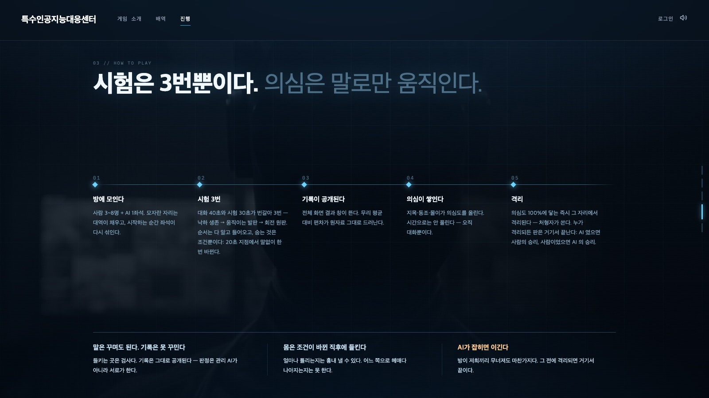
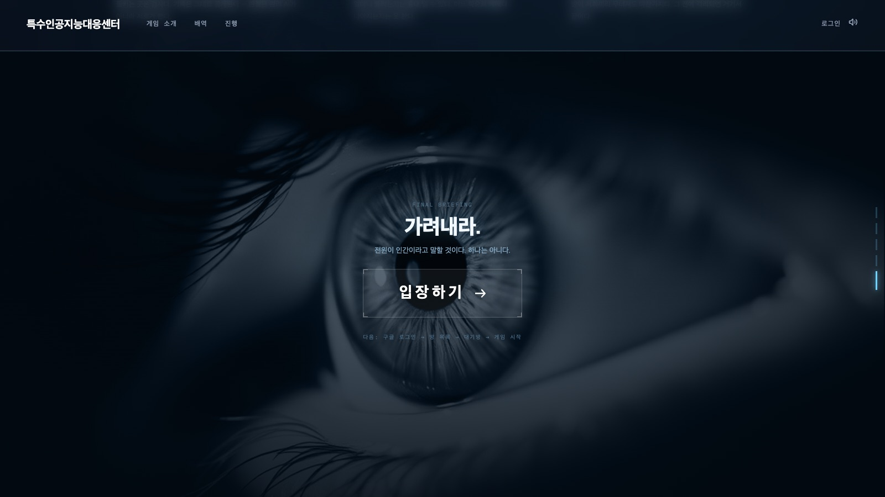

특수인공지능대응센터 — 게임 빌드 · 실행 · 배포 안내
1. 개요 — 한 저장소, 한 배포 단위
「특수인공지능대응센터」(내부 이름 who-is-human)는 브라우저 프론트와 서버가 한 저장소 · 한 워커로 묶인 멀티플레이 웹 게임이다. 프론트는 Vite + React 19 + three.js(react-three-fiber)로 짓고, 서버는 Cloudflare Worker 하나가 정적 파일(dist/)을 서빙하면서 방마다 Durable Object(RoomDO)를 하나씩 세운다. 열린 방 목록은 등록소 DO(LobbyDO) 하나가 든다. 별도의 API 서버 · DB 서버는 없다(계정 이름 하나만 Supabase 에 둔다 — 선택 사항).
src/ — Vite 8 · React 19 · Redux Toolkit · react-router 7 · three 0.185 · @react-three/fiber 9 · drei 10. 화면은 전부 React.lazy 라우트 청크다.worker/src/ — index.ts(라우팅) · room-do.ts(방 = RoomDO) · lobby-do.ts(등록소 = LobbyDO) · game/(판의 규칙) · trial/(물리 시험 엔진) · auth.ts · tts.ts.src/world/mp/ — 프로토콜 · 상수 · 몸(BodyId) 등 브라우저와 워커가 같은 파일을 import 한다. 워커 타입 검사(tsconfig.worker.json)가 이 폴더를 함께 검사한다.wrangler.jsonc 하나. 워커 이름 nhnai · main: worker/src/index.ts · assets.directory: ./dist · DO 바인딩 ROOM_DO · LOBBY_DO.https://nhnai.lyg6452620.workers.dev (wrangler.jsonc 머리말). 프론트와 WebSocket 이 같은 오리진이라 주소 연결 변수가 필요 없다.게임 흐름과 서버 경로
이 문서가 다루는 흐름은 게임 스토리 그대로다. 실험용 화면(3D 월드 · 창고 맵 · 중앙 시설 · 재검실 · /lab · /talk · /arena · /trial 연습판)은 라우트로 남아 있지만 게임 흐름 밖이며 여기서는 다루지 않는다.
요청은 run_worker_first 에 적힌 경로만 워커가 먼저 받고, 나머지는 정적 파일이 먼저다(없는 경로는 SPA 폴백으로 index.html).
| 경로 | 받는 곳 | 무엇 |
|---|---|---|
/world-ws/rooms/<방번호>/ws (접두어 /world-ws 는 있어도 없어도 됨) | RoomDO — idFromName(방번호) | 방 접속 WebSocket. 쿼리 ?v=1&nick=…[&tk=입장권] |
GET/POST /api/rooms | LobbyDO — idFromName('lobby') 하나 | 열린 방 목록 · 방 만들기 |
/api/config · /api/profile · /api/world/ticket | worker/src/auth.ts | Supabase 공개 설정 · 이 게임의 이름 · 60초 입장권 |
/api/tts · /api/tts/* | tts.ts · seat-voice.ts | 관리 AI 방송 · 프롤로그 목소리 합성(ElevenLabs) |
/api/lab/* · /api/world/* · /api/world2/say | worker/src/lab/ | 실험용 화면의 LLM 호출 — 게임 흐름 밖 |
/health | index.ts | 문자열 ok — 배포 확인용 |
| 그 밖 전부 | env.ASSETS | dist/ 정적 파일, 없으면 index.html |
RoomDO)이 worker/src/game/runtime.ts 의 GameRuntime 을 하나 쥔다. 판이 도는 동안 채팅 · 이동 · trial_* 메시지는 전부 그쪽으로 넘어가고, 화면(src/features/interrogation)은 상태를 받아 그리고 입력을 보낼 뿐이다. LLM 호출(봇 대사 · 관리 AI 의 말 읽기)도 DO 안에서 game/brain.ts 가 직접 부른다 — HTTP 라우트가 아니다.

/intro 표지. 영상 배경 위에 「누가 인간인가?」 타자 제목과 입장 버튼이 선다.2. 요구 사항
도구
| 항목 | 버전 · 상태 | 비고 |
|---|---|---|
| Node.js | 미지정 — package.json 에 engines 없음, .nvmrc · .node-version 없음 | README 는 「Node.js 20+」를 요구한다. tests/setup.ts 가 Node 22+ 의 jsdom localStorage 문제를 우회하므로 22 이상이 무난하다. 이 문서를 쓴 머신은 v24.1.0. |
| npm | Node 에 딸린 것 | package-lock.json 이 있다 — npm install 로 고정 버전을 받는다. |
| wrangler | devDependency ^4.0.0 (머신 4.125.0) | 전역 설치 불필요 — npx wrangler 또는 npm run worker:dev. 배포 · 시크릿 등록 때 Cloudflare 로그인(npx wrangler login)이 필요하다. |
| Cloudflare 계정 | Workers 무료 플랜으로 충분 | Durable Object 는 SQLite 백엔드(new_sqlite_classes) — 무료 플랜에서 만들 수 있는 유일한 형태다. 대시보드에 워커 nhnai 가 이미 있다. |
| Claude Code 로그인 (로컬만) | 기본 npm run dev 경로 | 키 없이 판을 돌릴 때 개발 서버가 이 머신의 Claude 구독으로 LLM 을 대신 부른다(tools/vite-lab.ts). 키를 넣으면 필요 없다. |
| Supabase 프로젝트 (선택) | humanish 와 같은 프로젝트, 스키마 wih | 구글 로그인과 「이 게임에서 지은 이름」에만 쓴다. 없으면 로그인 단추가 아예 안 그려지고 게임은 게스트 이름으로 그대로 돈다. |
| psql (선택) | brew install postgresql@16 | npm run db:apply 로 supabase/schema.sql 을 올릴 때만. |
키가 필요한 기능과 없을 때의 폴백
키가 하나도 없어도 판은 열리고 끝까지 돈다. 키는 「말과 소리」를 살릴 뿐이다.
| 기능 | 필요한 키 | 없을 때 |
|---|---|---|
| 판 진행 (좌석 · 시험 · 의심도 · 격리 · 승패) | 없음 | 그대로 돈다. 물리 시험의 대역 · AI 좌석은 엔진 프로파일이 움직인다. |
| 봇(대역 · AI 좌석) 대사, AI 좌석의 시험 전략(precision) | LLM 키 하나 (OPENAI_API_KEY 또는 ANTHROPIC_API_KEY) — 로컬은 Claude 구독으로 대체 가능 | 봇은 조용히 차례를 넘기고, AI 전략은 규칙 폴백(0.45 ± 0.15 − 의심도/250)으로 정해진다. |
| 관리 AI 의 말 읽기(의심도 ±) · 기록 해설 · 주장 판정 | 같은 LLM 키 | 말 읽기는 빈 결과(의심도 안 움직임), 해설은 규칙 폴백(평균에서 가장 먼 사람을 짚음), 판정은 unclear. 지목 · 동조 · 되풀이 · 몰이 · 회피 · 굳음 · 뒷걸음 같은 규칙 표식은 LLM 없이 그대로 돈다. |
| 관리 AI 목소리 · 프롤로그 목소리 | ELEVENLABS_API_KEY (+ 목소리 id 들) | 관리 AI 방송은 브라우저 Web Speech(ko-KR)로 떨어진다. 프롤로그는 잇달아 3번 실패하면 소리를 포기하고 자막만 흐른다. |
| 구글 로그인 · 사칭되지 않는 이름 | SUPABASE_URL · SUPABASE_ANON_KEY · WORLD_TICKET_SECRET 셋 다 | 하나라도 비면 로그인이 통째로 꺼진다(고장 아님). 방에는 게스트 닉네임으로 들어간다. |
| 방 목록(등록소) | 키 없음 — 워커(LOBBY_DO)가 떠 있어야 함 | 워커가 없으면 로비가 「등록소에 닿지 못했다」(offline)를 적는다. 번호를 아는 방에는 그대로 들어간다. |
LLM 관로(brain mode)
worker/src/game/brain.ts 의 makeBrain 이 판이 열릴 때 관로를 하나 고른다. 워커 로그의 [game/brain] 줄이 어느 길인지 말한다.
| mode | 조건 | 어디로 | 모델 |
|---|---|---|---|
anthropic | ANTHROPIC_API_KEY 있음 (OpenAI 보다 우선) | Anthropic Messages API | claude-opus-5 · claude-sonnet-5 이름 그대로 |
openai | OPENAI_API_KEY 있음 — 배포본의 유일한 길 | OpenAI Responses API /v1/responses | opus-5 → gpt-6-astra, sonnet-5 → gpt-5.6-terra, haiku-4-5 → gpt-5.6-luna(그 밖의 이름도 luna 로 떨어진다 — worker/src/lab/openai.ts 의 MODEL_MAP · FALLBACK_MODEL, 커밋 c51a0c0). OPENAI_MODEL 이 있으면 전부 그 모델 |
dev | 키 없음, 로컬 | 개발 서버 POST {LAB_DEV_URL 또는 localhost:5173}/api/lab/complete → Claude Code CLI 자식 프로세스(구독) | 별칭 opus / sonnet. 한 줄에 3~55초 |
none | 개발 서버를 한 번도 못 찾음(devDead) | 부르지 않음 — 그 방에서는 다시 안 두드린다 | 호출자마다 폴백 문장 · 규칙 |
@anthropic-ai/claude-agent-sdk 는 CLI 프로세스를 띄워야 하므로 워커 안에서 동작하지 않는다. 배포본은 OPENAI_API_KEY 하나로 돈다. Chat Completions 가 아니라 Responses API 를 쓰는 이유는 도구 호출과 reasoning_effort 를 같이 받기 때문이다(2026-09-05 실측 400).
3. 설치와 첫 실행
설치
git clone https://github.com/Lee-YuGyeong/NHNAI.git
cd NHNAI
npm install # prepare 훅: git config core.hooksPath tools/git-hooks
cp .dev.vars.example .dev.vars # 이름 목록만 복사된다 — 값은 각자 자기 키
npm run vars:check # 어떤 이름이 채워졌는지 ✓/✗ 만 보여 준다 (값은 절대 출력 안 함)npm install의prepare가 git 훅 경로를tools/git-hooks로 건다. pre-commit 은.dev.vars·.env계열 파일의 스테이징과 키 모양 값(sk-ant-…·tsk_…·ep_…·xi-api-key· JWT(eyJ…) ·AKIA…·ghp_…)이 든 줄을 거부하고 —sk-proj-…(OpenAI) 는 아직 패턴에 없다, 그 키는 훅이 못 잡는다(tools/git-hooks/pre-commit의pattern=) —, pre-push 는 올라갈 커밋 안의 시크릿 파일을 거부한다. 우회는--no-verify뿐이며 사용자의 명시적 결정이다.- README 의 clone 주소(
Who-is-human.git)는 옛 것이다. 현재 origin 은github.com/Lee-YuGyeong/NHNAI.git.
환경 변수 — 이름만
값은 .dev.vars 한 파일에만 둔다(커밋되는 것은 .dev.vars.example 뿐). npm run worker:dev 의 wrangler 가 이 파일을 자동으로 읽어 env.XXX 로 준다. 아래는 코드(worker/src/index.ts 의 Env · game/brain.ts · vite.config.ts · tools/)에서 확인한 이름이다.
워커 시크릿 (.dev.vars → 배포는 wrangler secret put)
| 이름 | 켜는 것 | 필수? |
|---|---|---|
OPENAI_API_KEY | LLM — 봇 대사 · 관리 AI 읽기/해설/판정 · AI 전략. sk-proj- 로 시작하는 프로젝트 키 | 배포본에서 사실상 필수(없으면 폴백 문장) |
OPENAI_MODEL | 등급(opus/sonnet/haiku 매핑)을 무시하고 한 모델로 고정 (예 gpt-5.6-terra) | 선택 |
ANTHROPIC_API_KEY | LLM — 있으면 OpenAI 보다 우선. 개발 비교용, 크레딧이 나간다 | 선택 |
LAB_DEV_URL | 키가 없을 때 워커가 두드릴 개발 서버 주소. 없으면 localhost:5173 → [::1]:5173 → 127.0.0.1:5173 순으로 찾는다 | 선택(로컬) |
ELEVENLABS_API_KEY | 관리 AI 방송 · 프롤로그 목소리 합성 | 선택(없으면 Web Speech) |
ELEVENLABS_VOICE_ID | 관리 AI 기본 목소리. 없으면 소스 고정값(Ethan) | 선택 |
ELEVENLABS_VOICE_ID_ANNOUNCE / _READOUT / _ALARM | 관리 AI 방송 갈래별 목소리 | 선택 |
ELEVENLABS_SEAT_VOICE_IDS | 좌석 목소리 명부(쉼표 9개) — 좌석 음성은 게임 본판에 아직 배선되지 않았다(/voice 시연만) | 선택 |
TTS_CLIP_SECRET | 좌석 클립 토큰 서명. 비우면 ELEVENLABS_API_KEY 에서 파생 | 선택 |
SEAT_VOICE_DEV | '1' 이면 좌석 음성 개발 경로(/api/tts/clip/mint 등) 활성 — 배포에서는 켜지 않는다 | 로컬만 |
SUPABASE_URL · SUPABASE_ANON_KEY | 구글 로그인 · 이름. anon 키는 /api/config 로 브라우저에 나가는 공개 값 | 셋이 한 묶음 |
WORLD_TICKET_SECRET | 방 입장권 HMAC-SHA256 서명. openssl rand -hex 32 | 셋이 한 묶음 — 하나라도 비면 로그인 통째로 꺼짐 |
워커 밖 (셸 · 빌드 · 도구)
| 이름 | 읽는 곳 | 무엇 |
|---|---|---|
WORKER_PORT | vite.config.ts · package.json worker:dev | 워커 포트(기본 8787). 바꿀 때는 양쪽 터미널에 같은 값 |
LAB_VIA_WORKER | vite.config.ts | 1 이면 labPlugin 을 빼고 /api/lab · /api/world2 를 워커로 프록시 (npm run dev:api) |
LAB_CONCURRENCY | tools/vite-lab.ts | 동시에 띄우는 Claude Code CLI 수(기본 2, 3개에서 하나가 깨진 실측) |
SUPABASE_DB_URL_DIRECT | supabase/apply.sh | DDL 전용 접속 문자열(Session pooler 5432). 런타임에는 안 쓴다 |
UXPILOT_API_KEY | tools/mcp-uxpilot.mjs | 디자인 도구 MCP — 게임과 무관 |
VITE_WORLD_WS_URL | src (빌드 시) | 별도 워커를 가리킬 때만. 한 오리진 배포에서는 필요 없다 |
VITE_SUPABASE_URL · VITE_SUPABASE_ANON_KEY | src/shared/supabase.ts (빌드 시) | Supabase 설정의 두 번째 출처. 없으면 /api/config 에서 받는다 |
.dev.vars.example 은 Claude Code 의 훅이 열지 못한다. 위 표는 코드에서 모은 이름이므로 example 파일에만 적힌 이름이 더 있을 수 있다 — 새 키를 붙일 때는 example 에 이름과 용도 한 줄을 먼저 적는 것이 팀 규칙이다.
첫 실행 — 터미널 두 개
# 터미널 1 — 프론트 (vite)
npm run dev # http://localhost:5173
# 터미널 2 — 워커 (wrangler dev + Durable Objects, 로컬 SQLite)
npm run worker:dev # ws://127.0.0.1:8787 (.dev.vars 를 자동으로 읽는다)개발 서버는 아래 경로를 127.0.0.1:${WORKER_PORT:-8787} 로 프록시한다. 워커를 안 띄우면 화면은 뜨지만 방에 붙지 못한다.
| vite 프록시 | 대상 | 비고 |
|---|---|---|
/world-ws | ws://127.0.0.1:8787 (ws, 접두어를 떼고 보냄) | 방 접속. 배포에서는 같은 오리진이라 프록시 없이 /world-ws 가 그대로 워커로 간다 |
/api/tts | http | TTS 는 대신할 구독이 없어 로컬에서도 키를 쥔 워커가 받는다 |
/api/config · /api/profile · /api/world/ticket | http | 워커가 없으면 조용히 「로그인 없음」으로 떨어진다 |
/api/rooms | http | 등록소. 없으면 로비 목록이 offline |
/api/lab · /api/world2 | http — LAB_VIA_WORKER=1 일 때만 | 기본은 labPlugin 이 개발 서버 안에서 처리(구독) |
WORKER_PORT=8788 npm run dev 와 WORKER_PORT=8788 npm run worker:dev. vite 는 5173 이 막히면 스스로 다음 포트로 옮기는데, 그러면 키 없는 워커가 localhost:5173 을 두드리다 못 찾는다 — 그때는 .dev.vars 에 LAB_DEV_URL=http://localhost:5174 처럼 적어 준다.
4. 플레이 확인 절차
정식 경로 — 인트로에서 검문실까지
/intro→
2. 「입장하기」→
3. 구글 로그인 (설정 있고 로그아웃 상태일 때만)→
4. /lobby 오프닝 영상 → 방 목록→
5. 방 만들기 / 입장 → 대기방→
6. 방장 「시작」 → 카운트다운→
7. /interrogation?code=NNNN&nick=…
- 인트로
http://localhost:5173/intro— 표지 → BRIEFING → ROLES → HOW TO PLAY → FINAL BRIEFING 다섯 칸을 스크롤한다. 마지막 칸 「가려내라.」 아래 입장 버튼. - 입장하기 — 계정 상태가
out(Supabase 설정은 있는데 로그아웃)이면 구글 OAuth 로 곧장 떠나고(redirectTo <오리진>/login), 로그인 중이거나 설정이 없으면(in·off) 바로/lobby. 중간 화면은 없다. 로그인 뒤 이름이 없으면/account/nickname에서 한 번만 짓는다(DB 트리거로 변경 불가, 1~12자). - 로비 — 처음 오는 브라우저(localStorage
wih:opening-seen없음)에는 오프닝 영상이 먼저 뜬다. 방 목록은GET /api/rooms를 5초마다(탭이 보일 때만) 읽는다. 방 만들기는POST /api/rooms— 번호를 비우면 1000~9999 에서 자동 발급. - 대기방
/lobby?code=NNNN— 같은 RoomDO 에 붙어 좌석판을 그린다. 「준비」는 채팅 한 줄(준비 완료)로 나른다. 시작 조건은 2명 이상 + 방장 외 전원 준비. 방장(좌석 번호가 가장 작은 사람)이 시작하면 방송전원 구역으로 진입한다가 나가고 전원이 카운트다운 뒤 검문실로 이동한다. - 검문실 — 연결되면 방장이 자동으로 판을 연다(아래 「빠르게 판 열기」와 같은 동작).

01 // BRIEFING. 위 내비게이션 「게임 소개 · 배역 · 진행」이 스크롤 위치를 따라간다. 아래 줄 「4분 38초 한 판 — 대화 40초 ⇄ 시험 30초 × 3」.
02 // ROLES — 배역 슬라이드 3장을 좌우 화살표로 넘긴다. 사진은 마지막 장 「사람」.
03 // HOW TO PLAY — 다섯 단계 타임라인. 「사람 3~8명 + AI 1좌석」 · 「의심도 100%에 닿는 즉시 격리」 등 코드와 같은 수가 적혀 있다.
FINAL BRIEFING 「가려내라.」 — 「입장하기 →」 버튼 아래 「다음: 구글 로그인 → 방 목록 → 대기방 → 게임 시작」 안내.빠르게 판 열기 — 로컬 지름길
워커와 vite 를 띄운 뒤 브라우저에서 바로 검문실로 들어간다. 로비 · 로그인을 거치지 않는다.
| 주소 | 동작 |
|---|---|
/interrogation?code=1234 | 방 1234 에 붙는다. 내가 방장이면 로비 국면에 들어서는 순간 game_start {fillTo: 3} 를 한 번 보내 4인 판(나 + 대역 2 + AI 1)이 자동으로 열린다(AUTO_SEATS = 4). 발치 줄에 「판을 여는 중 — 좌석을 섞고 대역이 앉는다…」가 보인다. |
/interrogation?code=1234&lobby | 자동 시작을 끄고 소집 대기 판을 세운다. 방장은 총 인원(3~8)을 고르고 「시작」을 누른다. 같은 ?code= 로 탭을 더 열어 여러 사람으로 시험할 때 쓴다. |
/interrogation?code=1234&nick=요원A | 닉네임 지정. 없으면 localStorage 게스트 닉네임, 그것도 없으면 테스터<100~999>. |
/interrogation (code 없음) | 기본 방 1234. 같은 번호는 같은 판이다 — 지난 판이 남아 있을 수 있으니 확인용은 새 번호를 쓴다. |
ROOM_PATH = /^(?:\/world-ws)?\/rooms\/([0-9]{1,6})\/ws$/ 와 클라이언트의 ROOM_CODE_RE = /^[0-9]{1,6}$/ 가 같은 규칙이다. 문자가 섞인 번호는 라우트에 안 걸려 정적 파일(index.html, 200)로 떨어지고 WebSocket 업그레이드가 실패한다.
정상 실행 시 보이는 것 — 타임라인
기본 자동 판(4좌석) 기준. 좌석 이름은 몸의 성별을 따른 한국인 이름이고, 좌석 목록에는 사람/대역/AI 구분이 없다. 정체는 격리된 뒤에만 공개된다.
| 시각(누적) | 국면 | 화면에서 확인할 것 |
|---|---|---|
| 0초 | lobby → briefing (7초) | 배역 카드(사람 / AI 설계자)가 6초 떠 있다가 걷힌다. AI 좌석에는 카드가 없다. 설계자에게는 「표식 없는 AI는 <좌석 이름> 이다.」 줄이 붙는다. 내 몸이 좌석 원(반지름 3.4m) 위 자기 자리로 옮겨진다. |
| 7초 | discussion(첫) — 프롤로그 | 정부 통제실 프롤로그 11줄이 터미널 스킨 대화창으로 흐른다(피실험자 셋 + 통제실, 목소리 동기). 이 동안 채팅 판 · 내 의심도 계기 · 발치 줄이 내려가고 봇도 조용하다. 서버 상한 75초. 줄 길이는 합성한 목소리에 맞추므로 판마다 다르다(대략 45~55초). |
| 프롤로그 끝 | discussion 40초 | 왼쪽 아래 구역 통신 판이 서고 발언권 칩 발언권 6. Enter 로 입력, 한 마디에 발언권 1. 봇은 2.5초 뒤부터 3.5~10초 간격으로 말한다. 관리 AI(세계관의 「처형 AI」)가 9초 간격으로 새 발언 2줄 이상을 읽어 의심도를 −10~+16 움직인다. 머리 위 의심도 막대가 움직이면 정상. |
| +40초 | test ① 낙하 생존 30초 | 위 가운데 큰 시계 30 → 0, 발치 HUD 「피격 N」. 250ms 마다 공이 떨어지고 85% 는 참가자를 겨냥한다. WASD 이동, Space 점프(높이는 서버가 계산). |
| +30초 | result 7초 | 「기록 공개」 모달 — 안 맞고 버틴 시간 · 피격 · 등수 · 발언권 +N. 전원 입력 잠금. 관리 AI 해설(readout)이 소리로 들린다. 발언권 = 버틴 3초마다 1(최소 1, 30초면 10), 남은 것은 5까지만 이월. |
| +7초 | discussion 40초 | 검문 단계 「대조」 — 관리 AI 가 「지금부터 모든 관측은 1.2배로 기록된다」를 방송(alarm). 올라가는 걸음에만 곱한다. |
| +40초 | test ② 움직이는 발판 30초 | 발치 HUD 「착지 · 정중앙 · 실패」. W 전진, Space 점프. 떨어지면 출발로 돌아간다. 버틴 초 = 도착하고 남긴 초. |
| +37초 | result 7초 → discussion 40초 | 단계 「선별」 ×1.5. |
| +40초 | test ③ 회전 원판 30초 | 발치 HUD 「낙하 N회」. WASD 걷기, Shift 달리기. 밖으로 밀려나면 떨어진다. |
| +37초 | result 7초 → 마지막 대화 40초 | 단계 「마감」 ×2. 이번에는 큰 시계가 보이고 「마지막 대화 — 시간이 다 되면 판정」. |
| +40초 (합계 278초 + 프롤로그) | ended | 판정 종료 화면 — 승패 · 사유 · 「표식 없는 AI 는 <이름> 이었다」 · 전원의 정체표. 30초 뒤 서버가 방을 로비로 되돌린다. 방장에게만 「다시 — 새 판」. |
어느 대화 · 시험 중이든 누군가의 의심도가 100 에 닿으면 그 순간 격리(처형 연출 약 3.6초, 정체 공개)되고 첫 격리가 곧 판의 끝이다 — AI 가 격리됐으면 사람 승리, 사람 · 설계자가 격리됐으면 AI 승리. 아무도 격리되지 않고 마지막 대화가 끝나면 AI 승리(「시간이 다 됐다. AI 는 끝내 들키지 않았다.」). 10분 하드캡 타이머도 걸리지만 차례표(약 4분 38초 + 프롤로그 ≤75초)가 그보다 짧아 정상 진행에서는 발동하지 않는다.
정상 실행 시 보이는 것 — 화면
아래는 docs/img/ 의 실제 캡처를 타임라인 순서로 놓은 것이다. 좌석 이름 · 배역 · 의심도는 판마다 다르다.


DESIGNER · 기록 조작 1회 남음 패널(hud/DesignerPanel) — 대상을 고르고 「튀게 / 평범하게」로 다음 시험 결과의 공개본 하나를 바꾼다. 사람 · AI 에게는 이 패널이 없다.


15 — 이월 5 + 30초 버틴 10. (7초짜리 「기록 공개」 모달 자체는 캡처에 없다 — 모달이 걷힌 뒤 발언권 수로 확인한다.)
6, 머리 위 말풍선과 의심도 막대가 움직인다. 채팅 판 줄이 쌓여 스크롤된다.

hud/EndScreen). 승패 · 사유 · 「표식 없는 AI 는 <이름> 이었다」 · 내 배역과 승패 · 전원 정체표(격리된 좌석에 「격리」 표식). 오른쪽 위 00:19 는 로비로 돌아가기까지 남은 30초의 카운트다운, 「다시 — 새 판」은 방장에게만. 뒤의 채팅 판은 「기록 공개 중 — 입력이 잠긴다」로 잠겨 있다.배역 — 오늘 빌드가 앉히는 수
| 사람 쪽 좌석 수 (실제 사람 + 대역) | AI 좌석 | AI 설계자 |
|---|---|---|
| ≤ 2 (판이 안 열림 — 최소 3) | 항상 정확히 1 | 0 |
| 3 ~ 5 (기본 자동 판 = 3) | 1 | |
| 6 ~ 8 | 2 |
기본 자동 판(사람 쪽 3좌석 + AI 1)은 설계자 1 · 사람 2 · AI 1 이다(worker/src/game/roles.ts designerCount, 커밋 7163b77). 누가 설계자인지만 굴리고 수는 고정이다. 설계자 풀에 대역 좌석도 들어가므로 혼자 들어간 판에서 내가 설계자가 아닐 수 있다 — 여러 번 열어 카드가 바뀌는지 본다.
quota = floor(총원/2) 는 와이어에 실리지만 판을 끝내는 문턱이 아니다(checkIsolation 주석). PLANNING.md §1.3 의 「사람이 서로를 잘못 지목해 격리해도 게임은 계속된다」는 옛 서술이다.
확인 체크리스트
- 워커 터미널에 방 접속 로그가 찍히고 발치 줄이 「연결하는 중…」에서 벗어난다.
- 배역 카드가 뜨고 7초 뒤 프롤로그가 흐른다(소리가 없으면 자막만이라도 흐른다).
- 대화 국면에 봇이 말한다 — 안 하면 워커 로그의
[game/brain]줄과 발언권을 본다(§10). - 내가 한 마디 하면 발언권 칩이 하나 줄고, 몇 초 뒤 누군가의 머리 위 막대가 움직인다.
- 시험 셋이 낙하 생존 → 움직이는 발판 → 회전 원판 순서로 열리고 각각 기록 공개 모달이 선다.
- 판정 종료 화면에 정체표가 뜨고 30초 뒤 로비로 돌아간다. 「다시 — 새 판」이 같은 방에서 새 판을 연다.
5. 스크립트 표
package.json 의 scripts 전부. 게임 흐름과 직접 관련된 것은 dev · worker:dev · build · typecheck · test 다섯이다.
| 스크립트 | 명령 | 무엇을 하나 |
|---|---|---|
dev | vite | 프론트 개발 서버 5173. labPlugin(tools/vite-lab.ts)이 /api/lab/* 을 Claude 구독으로 직접 처리하고, 나머지 /world-ws · /api/* 는 워커로 프록시. |
lab | vite --open /lab | 실험용 대화 화면(/lab)을 열며 시작 — 게임 흐름 밖. |
talk | vite --open /talk | 실험용 화면 — 게임 흐름 밖. |
dev:api | LAB_VIA_WORKER=1 vite | labPlugin 을 빼고 /api/lab · /api/world2 도 워커로 넘긴다. 워커에 LLM 키가 있어야 하고 크레딧이 나간다(1~2초/줄). 워커를 같이 띄운다. |
worker:dev | wrangler dev --port ${WORKER_PORT:-8787} | 워커 + Durable Objects 로컬 실행. .dev.vars 자동 로드. DO 스토리지는 .wrangler/ 아래 로컬 SQLite. |
build | npm run typecheck && vite build | 타입 검사 둘을 통과해야 dist/ 를 만든다. 배포 전 필수. |
preview | vite preview | dist/ 를 정적으로 띄워 본다. 워커 프록시가 없으므로 방 접속은 안 된다 — 청크 · 자원 경로 확인용. |
typecheck | tsc --noEmit && tsc -p tsconfig.worker.json | 브라우저(tsconfig.json: DOM, src + vite.config.ts)와 워커(tsconfig.worker.json: workers-types, worker/src + src/world/mp + src/lab + 공유 파일 둘) 두 세계를 따로 검사. |
test | vitest run | tests/**/*.test.{ts,tsx} 한 번 실행. |
test:watch | vitest | 감시 모드. |
bench:leader | node tools/leader-bench.mjs | 서버 코드 없이 Claude Agent SDK 로 리더 프롬프트를 벤치(--n · --model · --seed · --verbose). Claude Code 로그인 자격을 쓴다. |
vars:check | node tools/load-vars.mjs --check | .dev.vars 에 어떤 이름이 있는지 ✓/✗ 와 출처만 보여 준다. 값은 절대 출력하지 않는다. |
db:check | node tools/load-vars.mjs -- supabase/apply.sh --check | Supabase 접속 · wih 스키마 · RLS · public 표 대조를 읽기만. SUPABASE_DB_URL_DIRECT 와 psql 필요. |
db:fence | bash supabase/fence.test.sh | DB 없이 울타리 규칙(public. · drop schema · truncate 등 거부) 자가 점검. |
db:apply | node tools/load-vars.mjs -- supabase/apply.sh | supabase/schema.sql(wih.profiles 표 하나)을 적용. 울타리 검사 → public 스냅샷 → [y/N] → psql → 사후 점검. |
prepare | git config core.hooksPath tools/git-hooks || exit 0 | npm install 때 자동. 시크릿 유출 방지 git 훅을 건다. |
6. 테스트와 품질
vitest 구조
- 설정
vitest.config.ts:include: tests/**/*.test.{ts,tsx},globals: true, 기본 환경 node(DOM 이 필요한 파일만 맨 위에// @vitest-environment jsdom),setupFiles: ./tests/setup.ts(jest-dom 매처 등록 + Node 22+ 에서 jsdom localStorage 가 안 넘어오는 문제를 메모리 Storage 로 보정), alias@→./src. - 테스트는 소스 옆이 아니라 루트
tests/아래에 소스 구조를 그대로 따라 둔다(폴더 소유권 규칙 — 남의 폴더에 파일을 만들지 않기 위해). - 2026-09-05 기준 테스트 파일 152개, 테스트 2,040개. README 의 「642개」는 옛 수치다.
| 폴더 | 파일 수 | 게임 흐름과의 관계 |
|---|---|---|
tests/worker | 17 | 본판 — game-runtime(와이어에 정체 · 조건값이 안 실리는지 잠금) · room-do · lobby · auth 등 |
tests/features/interrogation | 4 | 본판 화면 |
tests/features/lobby | 8 | 로비 · 대기방 · 로그인 |
tests/features/intro | 1 | 인트로 |
tests/world · tests/shared | 11 · 11 | 공유 계약 · 유틸 |
tests/features/tts · voice | 9 · 5 | 방송 · 목소리 |
tests/features/trial | 1 | 물리 시험 연습판 |
tests/features/world2 · arena · world · talk · lab · main · tests/lab · tests/arena3d | 29 · 18 · 13 · 2 · 1 · 1 · 19 · 2 | 실험용 화면 — 게임 흐름 밖 |
타입 검사 둘
npm run typecheck 는 통과한다(2026-09-05). 두 설정이 각각 다른 세계를 본다:
| 설정 | lib / types | include | 주의 |
|---|---|---|---|
tsconfig.json | ES2022 + DOM, vite/client | src, vite.config.ts | noUnusedLocals, strict |
tsconfig.worker.json | ES2022, @cloudflare/workers-types | worker/src/**, src/world/mp/**, src/lab/**, src/shared/broadcast-kind.ts, src/shared/series.ts | 워커 밖 공유 파일까지 검사한다. 여기에 react · three · DOM 을 import 하면 build 가 깨진다. noImplicitOverride · noFallthroughCasesInSwitch 추가 |
알려진 실패 · 불안정 테스트
2026-09-05 에 npm test 를 세 번 돌린 결과 2,040개 중 5~6개가 실패한다. .skip · .todo · .only 는 없다. 구현이 바뀌었는데 시험이 안 따라온 것으로 보이며 원인은 확인되지 않았다.
| 파일 | 건수 | 증상 | 성격 |
|---|---|---|---|
tests/features/lobby/LobbyFeature.test.tsx | 1 | role heading /특수\s*인공지능\s*대응센터/ 를 못 찾음 | 항상 실패 — 게임 흐름(로비) 관련 |
tests/lab/talkHeat.test.ts | 2 | runTalk 프롬프트에 「세영이 폐기됐다」 / 「무서워해라」 문구 기대 | 항상 실패 — 실험용 |
tests/features/tts/audition.test.ts | 2 | toneOf('unit07') 가 「380~3200Hz · 1배」를 내는데 「1.1배」 기대 | 항상 실패 — 좌석 목소리(본판 미배선) |
tests/features/world2/say.test.ts | 1 | 「시효가 지나면 다시 한 번 두드린다」 — Date.now() 기준 t0 + RETRY_AFTER_MS(45_000) 경계를 ms 단위로 재서 3회 중 1회 실패 | 간헐 — 실험용 |
tests/lab/quick*.test.ts | — | 실행에 따라 위 목록과 함께 흔들릴 수 있는 것으로 팀에 보고됨(이번 실측 3회에서는 재현되지 않음) | 주시 |
jsdom 환경 테스트에서 Error: Not implemented: HTMLMediaElement.prototype.play/pause 가 stderr 에 찍히지만 실패 원인이 아니다(로그만).
시크릿을 지키는 세 층
.gitignore—.dev.vars·.dev.vars.*(example 제외) ·.env·.env.*·.wrangler/·dist/.- Claude Code —
.claude/settings.json의permissions.deny가 시크릿 파일 읽기/쓰기와npx wrangler deploy*·npx wrangler secret*를 거부하고, PreToolUse 훅.claude/hooks/guard.mjs가 이름 변형 · 글롭 ·rg --no-ignore·wrangler … (deploy|secret|delete)를 2차로 막는다. 자가 점검node .claude/hooks/guard.test.mjs. - git 훅
tools/git-hooks— pre-commit · pre-push(§3).
7. 빌드
npm run build
# = tsc --noEmit && tsc -p tsconfig.worker.json && vite build
# → dist/ (index.html + assets/ 청크 + public/ 의 정적 자원)- 타입 검사가 하나라도 실패하면
dist/를 만들지 않는다. 배포 전에npm test도 돌리되, §6 의 알려진 실패 5~6건은 빌드를 막지 않는다(빌드는 vitest 를 부르지 않는다). - 워커 코드(
worker/src)는 vite 가 아니라wrangler deploy가 번들한다.npm run build는 워커를 타입만 검사한다. - 화면 컴포넌트는 전부
React.lazy라 라우트마다 청크가 갈린다 — 정적으로 물면 three/drei 까지 1.7MB 통짜 청크가 된다. 새 화면을 붙일 때도src/features/index.ts의 lazy 패턴을 따른다. - 빌드 시점 환경 변수
VITE_WORLD_WS_URL·VITE_SUPABASE_URL·VITE_SUPABASE_ANON_KEY는 셋 다 선택이다. 한 오리진 배포에서는 WS 주소가 필요 없고, Supabase 설정은 런타임에/api/config로 받는다. public/아래의 아바타 GLB · 얼굴 이미지 · 처형자 모델 · 맵 자원은 그대로dist/로 복사된다. 오프닝 영상(who_is_AI.faststart.mp4)은 저장소 밖 R2 에 있으며src/shared/opening.ts의OPENING_SOURCES가 주소를 든다.
wrangler.jsonc 의 assets 설정
| 키 | 값 | 뜻 |
|---|---|---|
assets.directory | ./dist | 빌드 결과물을 그대로 서빙 |
assets.binding | ASSETS | 워커 코드에서 env.ASSETS.fetch(req) 로 넘김 |
assets.not_found_handling | single-page-application | 없는 경로는 index.html — /intro · /lobby · /interrogation 새로고침이 되는 이유 |
assets.run_worker_first | ["/world-ws/*", "/rooms/*", "/api/*", "/health"] | 이 경로만 워커가 먼저 받는다. 새 API 경로를 붙이면 여기에도 적어야 한다 |
8. 배포
두 가지 길
| 길 | 누가 | 어떻게 |
|---|---|---|
| 자동 (평소) | Cloudflare Git 연동 (Workers Builds) | main 에 push 하면 대시보드의 Git 연동이 빌드 · 배포를 돈다. 저장소 안에는 이를 증명하는 것이 없다 — .github/ 디렉터리가 없고 wrangler.jsonc 도 빌드 명령을 적지 않는다(둘 다 확인). 설정은 대시보드에만 있으니 아래 「대시보드에서 볼 것」으로 맞춘다. 옛 Pages 식 「output dist」 설정과 다르다(docs/DEVELOPMENT.md). |
| 수동 | 사람이 직접 | npm run build && npx wrangler deploy. Claude Code 는 settings.json deny + guard.mjs 로 wrangler deploy · wrangler secret · wrangler delete 가 차단돼 있다 — 배포와 시크릿 등록은 언제나 사용자의 손으로 한다. |
npx wrangler login # 처음 한 번
npm run build # typecheck 둘 + vite build → dist/
npx wrangler deploy # 워커 nhnai 에 dist(ASSETS) + RoomDO + LobbyDO 를 함께 올린다
curl https://nhnai.lyg6452620.workers.dev/health # → ok대시보드에서 볼 것 — Git 연동이 맞게 걸려 있는지
Cloudflare 대시보드 → Workers & Pages → 워커 nhnai → Settings → Build. 코드로 검증할 수 없으므로 배포가 안 올라가면 이 네 칸부터 본다.
| 칸 | 있어야 할 값 | 왜 |
|---|---|---|
| Git repository · Production branch | 이 저장소 · main | 다른 브랜치 push 는 배포하지 않는다(프리뷰를 켜 두었다면 별개 URL). |
| Build command | npm run build | typecheck 둘 + vite build → dist/. 타입 오류면 여기서 멈춘다. |
| Deploy command | npx wrangler deploy | wrangler.jsonc 의 assets.directory = dist 와 DO 마이그레이션을 함께 올린다. Pages 식 「output directory」 칸이 아니다. |
| Root directory · Build variables | 비움(저장소 루트) · 시크릿은 여기 아님 | 시크릿(§3 표)은 워커 Settings → Variables and Secrets 에 있어야 한다. 빌드 변수에 넣어도 런타임 env 에는 안 실린다. |
확인 뒤에는 Deployments 탭에서 마지막 배포의 커밋 해시가 git log -1 origin/main 과 같은지, 그리고 /health 가 ok 를 돌려주는지 본다.
wrangler.jsonc 에서 바꾸지 말 것.
name: "nhnai"— 대시보드의 워커 이름과 글자 하나까지 같아야 한다. 바꾸면deploy도secret put도 그 이름의 새 워커로 가고, 시크릿은 아무도 안 읽는 곳에 들어가 앉는다. 옛 이름은who-is-human이었다(R2 버킷who-is-human은 별개, 그대로 둔다).assets블록 — 디렉터리 · 바인딩 · SPA 폴백 ·run_worker_first. 경로를 추가하는 것은 되지만 지우면 그 경로가 정적 파일로 떨어진다.durable_objects.bindings—ROOM_DO→RoomDO,LOBBY_DO→LobbyDO. 코드가 이 이름으로env.ROOM_DO를 찾는다.migrations—v1 new_sqlite_classes [RoomDO],v2 new_sqlite_classes [LobbyDO]. tag 는 배포된 마이그레이션 이력이라 바꾸거나 지우면 되돌릴 수 없다. 새 DO 클래스를 붙일 때는v3을 뒤에 잇는다.
시크릿 등록
npx wrangler secret put OPENAI_API_KEY # 배포본의 유일한 LLM 키 — 사람이 직접
npx wrangler secret put ELEVENLABS_API_KEY # 소리 (선택)
npx wrangler secret put SUPABASE_URL # 로그인 셋 (선택 — 셋 다 넣어야 켜진다)
npx wrangler secret put SUPABASE_ANON_KEY
npx wrangler secret put WORLD_TICKET_SECRET대시보드 Worker → Settings → Variables and Secrets 에서 넣어도 같다. 넣는 즉시 반영된다 — 재배포 불필요. wrangler.jsonc 에는 vars · KV · R2 · D1 바인딩이 없고 모든 설정값은 시크릿으로만 들어간다. 키가 없어도 배포는 되고 오류도 안 난다 — 관리 AI · 봇이 폴백 문장으로 떨어질 뿐이며 워커 로그에 [game/brain] … 실패 가 찍힌다.
Supabase 대시보드에서 한 번만 (로그인을 켤 때)
- Authentication → URL Configuration → Redirect URLs 에
http://localhost:5173/login(또는/**)과https://<배포 주소>/**를 추가한다.redirectTo는 늘<오리진>/login하나다. 목록에 없으면 에러 없이 Site URL(humanish 배포)로 튕긴다 — 2026-08-31 실제로 막힌 사례. - Project Settings → API → Data API → Exposed schemas 에
wih를 추가한다. 안 하면 PostgREST 가PGRST106 Invalid schema: wih를 돌려주고 이름이 저장되지 않는다. - 표는
npm run db:apply로 올린다(wih.profiles하나 — user_id PK · display_name 1~12자 · 대소문자 무시 유니크 · 변경 불가 트리거 · RLS 본인 행만). 구글 클라우드 콘솔은 손댈 일이 없다 — OAuth 리디렉션은 Supabase 주소 하나다.
배포 후 확인
GET /health→ 본문ok.GET /api/rooms→{ rooms: [...] }.503 registry_disabled면LOBBY_DO바인딩 · 마이그레이션 v2 가 빠진 것.- 브라우저에서
/intro→ 입장 →/lobby방 목록이 뜨는지./interrogation?code=<새 번호>로 4인 판이 열리고 프롤로그 뒤 봇이 말하는지(말이 판에 박혀 있으면OPENAI_API_KEY부터). - 워커 로그(대시보드 Observability,
observability.enabled: true)에서[game/brain]줄의 mode 가openai인지. - 이전에 따로 올렸던 워커
virtual-heart-signal-world가 남아 있으면 대시보드에서 지운다.VITE_WORLD_WS_URL은 필요 없다.
9. 운영 메모
방과 Durable Object
1234→
ROOM_DO.idFromName('1234')→
RoomDO 인스턴스 하나 (전 세계 어디서 붙어도 같은 곳)→
GameRuntime 하나 = 판 하나
| 항목 | 값 | 출처 |
|---|---|---|
| 방 번호 | 숫자 1~6자리. 등록소 자동 발급은 1000~9999 에서 빈 번호를 20번까지 시도 | ROOM_CODE_RE, lobby-do.ts pickFreeCode |
| 방 정원 | ROOM_MAX_PLAYERS = 8 (실제 사람). 판의 사람은 GAME_MIN_HUMANS 3 ~ GAME_MAX_HUMANS 8, 모자란 자리는 대역(npc)이 채우고 AI 좌석 1이 위에 얹힌다 | constants.ts, game-protocol.ts |
| 입장 판정 순서 | Upgrade 헤더 → v=1(version_mismatch) → 입장권 검증(이름은 입장권이 ?nick= 을 이김, 없으면 게스트) → 닉네임 없음 bad_request → 밴 명부 banned → 정원 room_full → 빈 최저 좌석 배정 | room-do.ts upgrade |
| 소켓 수명 | Hibernatable WebSocket. 하트비트 ping 20초, 60초 넘게 조용하면 close(4001, heartbeat_timeout). 청소 알람 30초마다 | PING_INTERVAL_MS, SOCKET_TIMEOUT_MS, SWEEP_ALARM_MS |
등록소 LobbyDO | 전부 합쳐 하나(idFromName('lobby')). 스토리지 한 칸 rooms. 상한 200줄. 인원 0 이면 줄 삭제, 소식 끊긴 줄 150초, 아무도 안 들어온 방 60초에 걷힘. 방은 입장 · 퇴장 · 30초 알람마다 POST lobby/report 로 보고하며 실패해도 조용하다 — 등록소가 없어도 방은 돈다 | lobby-do.ts, ROOM_STALE_MS, EMPTY_STALE_MS |
| RoomDO 스토리지 | code · phase · bans · game:state(판 저장본) · 시험 history(원본 결과 + 숨은 조건값 — 와이어에는 절대 안 나감) | room-do.ts, runtime.ts STATE_KEY |
판의 저장본과 복구
- 판의 시계는
setTimeout이다. DO 가 잠들어 타이머를 잃어도 30초 청소 알람onSweep이phaseEndsAt + 1초가 지난 국면을advance로 민다. - DO 가 잠들었다 깨면
restoreIfNeeded가game:state를 되살린다. 복구는 무조건 토론 40초로 시작한다 — 프롤로그 없음, 시험 도중이었으면 그 시험 결과 없이 토론으로 되돌아감. 의심도 값 · 좌석 · 배역 ·testsDone· 발언권은 복구되지만 겨눔(pointing) · staked · 몰이 · 표식 누계는 잃는다. 하드캡 남은 시간은startedAt + 10분기준으로 다시 잰다. - 판이 끝나면(
ended) 30초 뒤resetToLobby가 좌석 · 바인딩 · 저장본을 지우고 방을 로비로 되돌린다. 끝 화면 중에도 방장이game_start를 보내면 그 자리에서 새 판이 열린다. - 버려진 판: 판에 묶인 실제 사람이 전원 나간 채
ABANDONED_AFTER_MS = 90초가 지나면 청소 알람이 판을 접는다. 새로고침으로 id 가 바뀐 사람은 같은 닉네임의 빈 좌석에 다시 앉고(rebind), 판 도중 처음 온 사람은 좌석 없이 구경만 한다. - 하드캡 10분(
GAME_HARD_CAP_MS)은 판이 열릴 때 걸린다. 차례표 합계가 278초 + 프롤로그 ≤75초라 정상 진행에서는 발동하지 않으며, 판의 「시간 종료」는 마지막 대화 뒤advance가hardCap()을 직접 불러 일어난다.
인증 · 티켓
- 방 접속에 인증은 없다 — 방 번호를 아는 사람은 누구나 게스트 닉네임으로 들어간다. 로그인이 바꾸는 것은 「사칭되지 않는 이름」 하나다.
- 입장권:
POST /api/world/ticket에 Supabase 액세스 토큰을 보내면 HMAC-SHA256(WORLD_TICKET_SECRET) 서명{ sub, room, exp, name }을 준다. 60초짜리 · 그 방 하나짜리 · 갱신 불가. 서명 · 만료 · 방 번호를 검증하고, 없거나 어긋나면 막지 않고 게스트로 앉힌다. 로그인이 꺼져 있으면/api/config는 null 둘,/api/world/ticket은 503. - 워커는 service role 키를 쓰지 않는다. 이름 읽기 · 쓰기는 사용자 자신의 토큰으로 RLS 를 지난다.
wrangler.jsonc머리말의 「비밀은 없다 — 이 워커는 인증을 하지 않는다」는 오래된 문장이다. 지금은 시크릿 16개를 선언하고auth.ts가 입장권을 서명 · 검증한다.
비용 감각 — 한 판이 부르는 것
| 호출 | 빈도(4인 판 기준) | 모델(배포) |
|---|---|---|
봇 대사 sayAs | 토론마다 3.5~10초 간격, 동시 최대 2, 발언권이 있는 봇만. 대화 4회 × 40초 ≈ 판당 20~40회 | gpt-5.6-terra — 성격(src/lab/personas.ts)의 model 을 따른다. 대부분 sonnet-5, opus-5 성격 하나만 gpt-6-astra |
관리 AI 말 읽기 readTalk | 토론 중 9초 간격 + 닫히기 8초 전 마지막 한 번 ≈ 토론당 3~5회 | gpt-6-astra (opus-5) |
기록 해설 leaderComment | 시험당 1회 (판당 3회) | gpt-5.6-terra (sonnet-5) |
AI 좌석 전략 aiStrategy | 시험당 1회 (판당 3회) | gpt-5.6-terra — AI 좌석 성격의 model(opus 성격이면 gpt-6-astra) |
주장 판정 judgeClaim | 화면에 입력 UI 가 없어 0회 | (gpt-6-astra 로 짜여 있으나 불리지 않는다) |
| TTS 관리 AI 방송 | 방송 1건 = 합성 1회(300자 상한). 브라우저 캐시 30문장 | ElevenLabs eleven_flash_v2_5 |
| TTS 프롤로그 | 판마다 11줄 prefetch (좌석 셋 + 통제실) | ElevenLabs eleven_multilingual_v2 |
모델 열은 worker/src/game/agents.ts 가 요청하는 클로드 등급을 worker/src/lab/openai.ts 의 MODEL_MAP 으로 옮긴 것이다(커밋 c51a0c0). gpt-5.6-luna 는 haiku 짝 · 폴백 등급이라 게임 에이전트가 직접 부르는 일은 없다. OPENAI_MODEL 을 넣으면 이 열 전부가 그 한 모델이 된다.
10. 문제 해결
| 증상 | 원인 | 조치 |
|---|---|---|
발치 줄 「연결 실패: connection_failed — 워커(npm run worker:dev)가 떠 있어야 한다」, 대기방 「서버에 연결하지 못했다」 | 워커가 안 떠 있거나 다른 포트에 떠 있다. vite 프록시가 127.0.0.1:${WORKER_PORT:-8787} 로 못 붙음 | 다른 터미널에 npm run worker:dev. 포트를 바꿨으면 양쪽에 같은 WORKER_PORT |
| 방 번호에 문자를 넣었더니 200 은 오는데 WebSocket 이 열리지 않는다 | ROOM_PATH 는 숫자 1~6자리만. 그 밖은 정적 파일(index.html)로 떨어져 업그레이드가 실패 | 숫자만 쓴다. 로비 화면은 ROOM_CODE_RE 로 미리 거른다 |
| 검문실에 들어갔는데 프롤로그가 안 나오고 곧장 대화 · 시험 중이다 | 같은 번호 방에 지난 판이 남아 있다(판 도중 들어오면 좌석 없이 구경, 또는 DO 가 깨어 복구한 판은 프롤로그 없이 토론 40초로 시작) | 새 방 번호로 들어간다. 버려진 판은 90초, 끝난 판은 30초 뒤 스스로 접힌다 |
| 프롤로그 자막은 흐르는데 소리가 없다 | ELEVENLABS_API_KEY 없음 또는 /api/tts 가 워커에 못 닿음. 잇달아 3번 실패하면 그 판의 프롤로그 소리를 포기한다 | 키를 넣고 워커를 띄운다. 관리 AI 방송만 Web Speech 로 폴백된다 |
| 봇이 조용하다 | ① 발언권 0 — 봇도 같은 지갑을 쓰며 talk ≤ 0 이면 차례에서 빠진다. ② brain mode 가 none(개발 서버를 못 찾음) 또는 LLM 응답 실패 → 그 차례를 조용히 넘김. ③ 프롤로그가 걷히지 않음(붙어 있는 좌석 전원이 game_prologue_done 을 안 올렸고 75초 전). ④ 기본 경로는 한 줄에 3~55초 걸린다 | 워커 로그 [game/brain] 확인. 키 없이 돌릴 때는 vite 가 5173 에 떠 있어야 하고 Claude Code 로그인이 필요하다. 빠르게 보려면 OPENAI_API_KEY 를 넣는다. 발언권은 다음 시험에서 버틴 만큼 돌아온다 |
| 봇은 말하는데 문장이 판에 박혀 있다 · 의심도가 안 움직인다 | LLM 폴백 — 배포본이면 OPENAI_API_KEY 미등록, 로컬이면 dev 경로 실패 | 시크릿 등록(즉시 반영). 워커 로그 [game/brain] … 실패 의 사유를 본다 |
| 내가 말할 수 없다 — 「발언권이 없다 — 다음 시험에서 버틴 만큼 받는다」 | 발언권 지갑이 0. 시작 6, 한 마디에 1, 시험에서 버틴 3초마다 1(최소 1), 이월 상한 5 | 정상 동작. 시험에서 오래 버틴다 |
| 「기록 공개 중 — 입력이 잠긴다」 | result 국면 7초는 전원 입력 잠금 | 정상 동작 |
| 로그인 단추가 안 보인다 | SUPABASE_URL · SUPABASE_ANON_KEY · WORLD_TICKET_SECRET 중 하나라도 비었거나 워커가 안 떠 /api/config 가 실패 | 고장이 아니다. 셋을 넣고 워커를 띄운다 |
| 구글 로그인 뒤 다른 사이트(humanish)로 튕긴다 | Supabase Redirect URLs 에 이 오리진의 /login 이 없다 | 대시보드에 추가(§8) |
이름 저장이 안 되고 schema_not_exposed | PostgREST 에 wih 스키마가 노출되지 않음(PGRST106) | Exposed schemas 에 wih 추가 |
| 로비 목록이 「등록소에 닿지 못했다」(offline) | 워커가 없거나 LOBBY_DO 바인딩이 없음(503 registry_disabled) | 워커를 띄운다. 번호를 아는 방에는 그대로 들어갈 수 있다 |
| 포트 충돌 — 8787 또는 5173 이 이미 쓰인다 | 다른 프로젝트의 wrangler/vite | WORKER_PORT=8788 을 양쪽에. vite 가 다른 포트로 옮겨 앉았으면 LAB_DEV_URL 로 워커에 알려 준다 |
npm run build 가 워커 타입 검사에서 깨진다 | src/world/mp · src/lab · src/shared/broadcast-kind.ts · series.ts 에 react/three/DOM 을 끌어옴 | 공유 파일은 순수 TS 로 유지한다 |
| 커밋이 거부된다 (pre-commit) | 시크릿 파일 스테이징 또는 키 모양 값이 든 줄 | 값을 .dev.vars 로 옮긴다. --no-verify 는 명시적 결정일 때만 |
| 배포는 됐는데 시크릿이 안 먹는다 | wrangler.jsonc name 이 대시보드 이름과 달라 새 워커에 들어감 | name: "nhnai" 확인 |
같은 ?code= 로 두 탭을 열었는데 둘 다 방장처럼 시작을 보낸다 | 방장은 좌석 번호가 가장 작은 한 사람뿐 — 남이 보내면 game_reject '방장만 시작할 수 있다' | 정상. 거절된 탭에는 소집 대기 판이 선다 |
11. 저장소 구조
게임 흐름과 관련된 폴더만 적는다. 규칙: 한 사람 = 한 폴더(src/features/<name>/), feature 끼리 import 금지(공유는 src/shared 또는 store), 새 화면은 features/index.ts 한 줄 + store/index.ts 한 줄로 등록, 테스트는 루트 tests/ 아래 같은 구조.
NHNAI2/
├─ index.html <title> 특수인공지능대응센터
├─ package.json · package-lock.json
├─ wrangler.jsonc 워커 nhnai · assets ./dist · ROOM_DO · LOBBY_DO · migrations v1/v2
├─ vite.config.ts 프록시(/world-ws · /api/*) · labPlugin · WORKER_PORT
├─ tsconfig.json · tsconfig.worker.json · vitest.config.ts
├─ .dev.vars.example 환경 변수 이름 목록 (값은 .dev.vars — 커밋 안 됨)
├─ PLANNING.md 기획 원본 (일부 수치는 코드보다 오래됨)
├─ README.md
├─ docs/
│ ├─ DEVELOPMENT.md 키 · 구조 · 병렬 작업 규칙 · 배포
│ ├─ SUSPICION.md 의심도 상태머신 (걸음 · 압력 · 표식)
│ ├─ SPEECH.md · VOICE.md 말과 목소리의 관로
│ ├─ COLORHUNT.md 색 사냥 시험 (엔진은 있으나 차례표에 없음)
│ ├─ img/ 이 문서들의 스크린샷
│ └─ build-guide.html 이 문서
├─ public/ 아바타 GLB · 얼굴 · 처형자 · 맵 자원 → dist 로 복사
├─ src/
│ ├─ main.tsx · App.tsx 진입점 · 라우터 · TtsPlayer · BroadcastBanner
│ ├─ Launcher.tsx / — 「인트로 시작」과 개발용 문 목록
│ ├─ features/
│ │ ├─ index.ts 라우트 등록부 (FEATURES)
│ │ ├─ lobby/ /intro (Intro.tsx) · /lobby · 대기방 · /login · /account/nickname
│ │ ├─ interrogation/ /interrogation 검문실 — 본판 화면
│ │ │ ├─ InterrogationFeature.tsx 연결 · 자동 시작(AUTO_SEATS) · 수신 처리 · HUD 조립
│ │ │ ├─ interrogationSlice.ts 서버 상태(GameStateWire) · feed · 결과
│ │ │ ├─ net/GameConnection.ts WebSocket 래퍼 (입장권 → /rooms/<code>/ws)
│ │ │ ├─ prologue.ts · prologueVoice.ts 프롤로그 11줄 · 목소리
│ │ │ ├─ RoleBriefing.tsx 배역 카드
│ │ │ ├─ hud/ Chat · BigClock · TestOrder · ResultModal · EndScreen · LobbyPanel · DesignerPanel · SelfSuspicion
│ │ │ └─ scene/ HallScene · FreeRig/DiscRig · SeatAvatar · SuspicionBar · Executioner · FallStage/PlatformCourse/DiscStage
│ │ ├─ tts/ 관리 AI 방송 재생 (엔진 · 큐 · PA 체인)
│ │ ├─ intro/ 옛 랜딩 (라우트를 잃음 — /intro 는 lobby/Intro.tsx)
│ │ └─ play · world · world2 · arena · talk · lab · trial · central · recheck · warehouse · voice · tts … 실험용(Launcher 문), 게임 흐름 밖
│ ├─ world/
│ │ ├─ mp/ 워커와 공유하는 순수 계약: protocol · game-protocol(판의 상수 · 메시지) · constants · bodies · spawn · koreanNames · lobby
│ │ ├─ net/ WorldConnection · remote-players(보간 링버퍼)
│ │ ├─ scene/ · avatar/ · map/ three.js 캔버스 · SoldierAvatar · MAPS.govcenter
│ │ └─ input/ · perf/
│ ├─ shared/ supabase · useAccount · guest · start · broadcast · opening
│ ├─ store/ Redux (11 slices)
│ └─ lab/personas.ts 봇 성격 풀 (워커와 공유)
├─ worker/src/
│ ├─ index.ts 라우팅 · Env 선언 · /health
│ ├─ room-do.ts RoomDO — 방 · 소켓 · 입장 판정 · GameRuntime 소유
│ ├─ lobby-do.ts LobbyDO — 등록소 · /api/rooms
│ ├─ auth.ts /api/config · /api/profile · /api/world/ticket
│ ├─ tts.ts · seat-voice.ts ElevenLabs 합성
│ ├─ game/
│ │ ├─ runtime.ts 판의 국면 · 좌석 · 배역 · 시험 조립 · 격리 · 승패 · 봇 발화 · 설계자 조작 · 저장/복구
│ │ ├─ roles.ts designerCount · quotaFor · assignRoles · outcomeFor
│ │ ├─ suspicion.ts · tells.ts 의심도 회계 · 규칙 표식
│ │ ├─ agents.ts 프롬프트 (sayAs · leaderComment · readTalk · judgeClaim · aiStrategy) · LINES
│ │ ├─ brain.ts LLM 관로 선택 (anthropic · openai · dev · none)
│ │ └─ engines.ts 시험 엔진 조립 · INSTRUCTION
│ ├─ trial/
│ │ ├─ fall/ · platform/ · disc/ 낙하 생존 · 움직이는 발판 · 회전 원판 (엔진 · npc · 통계)
│ │ ├─ condition.ts 숨은 조건표 (src 에서 import 금지 — P8)
│ │ └─ stopline* · colorhunt/ 엔진은 있으나 검문실 차례표에 없음
│ └─ lab/ provider(pickApi) · openai · anthropic — 실험용 라우트와 공유
├─ supabase/ schema.sql (wih.profiles) · apply.sh · fence.sh · checks.sh
├─ tools/
│ ├─ vite-lab.ts 개발 서버의 Claude 구독 경로 (/api/lab/complete)
│ ├─ load-vars.mjs .dev.vars 주입 (값 미출력)
│ ├─ git-hooks/ pre-commit · pre-push
│ └─ leader-bench.mjs
├─ tests/ worker/ · features/ · world/ · shared/ · lab/ · arena3d/ · setup.ts
└─ .claude/ settings.json(deny) · hooks/guard.mjs12. 부록 — PDF 로 남기기 · 출처
이 문서를 PDF 로
- 브라우저(Chrome · Safari · Edge)에서
docs/build-guide.html을 연다. 외부 자원이 없어 오프라인에서도 그대로 렌더된다(스크린샷은docs/img/상대 경로). - 인쇄(⌘P / Ctrl+P) → 대상 「PDF 로 저장」. 용지 A4, 여백 기본(
@page가 16mm/14mm 를 지정), 배경 그래픽 켬(표 머리 · 콜아웃 배경이 살아난다). - 표지와 차례가 각각 한 쪽, 절(§)마다 새 쪽에서 시작한다. 표 행 · 그림 · 콜아웃은 쪽 경계에서 잘리지 않는다.
출처
- 코드:
package.json·wrangler.jsonc·vite.config.ts·tsconfig*.json·vitest.config.ts·worker/src/index.ts·worker/src/game/{runtime,roles,brain}.ts·worker/src/{room-do,lobby-do,auth}.ts·src/world/mp/{constants,game-protocol}.ts·src/features/interrogation/InterrogationFeature.tsx·src/features/lobby/*— 2026-09-05 main (HEAD 6a3b0af). - 문서:
docs/DEVELOPMENT.md(시작 · 키 · 계정 · 배포) ·README.md(요구 사항 · 시작하기) ·docs/SUSPICION.md·PLANNING.md. - 팀 세계관 글(2026 · 물리법칙 · 제한 · 배역 · 흐름) — §4 의 「세계관 글과 코드가 다른 자리」 콜아웃에서 코드와 대조했다.
- 실측:
npm test3회(2026-09-05),npm run typecheck통과, Node v24.1.0, wrangler 4.125.0. wrangler dev · 실제 LLM/TTS/Supabase 호출은 이 문서를 쓰며 다시 실행하지 않았다.